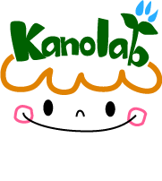

1｜包摂的な科学コミュニケーションとSTEAM教育
- 科学技術への低関心層の包摂
- 女性のSTEM分野進学の障壁
- ろう・難聴の子どもと家族の包摂
- 文化に根ざしたSTEAM教育
メンバー

滋賀大学教育学部 教授｜科学コミュニケーション研究室 Visiting Fellow, Australian National Centre for the Public Awareness of Science, Australian National University
加納圭は、科学、教育、社会、政策の交差点で研究と実践を行っています。科学コミュニケーションとSTEM／STEAM教育を、より包摂的で、文化に根ざし、社会変化に応答できるものにすることを中心課題としています。
生命科学の博士号を持ち、生命科学研究者、高校非常勤講師、予備校講師、大学教員としての経験があります。分野や制度の境界を越え、研究者、教育者、放送関係者、政策関係者、地域団体と協働し、研究を教育実践、公共参加、教材、メディア、政策へつなげています。
柿渋と茶を中心に、伝統知識、地域文化、サステナビリティ教育、グリーンイノベーションを研究しています。京野菜や和菓子を題材とした文化に根ざした科学教育にも取り組んできました。
教師と学習者の主体性、教育データ、ELSI／RRI、包摂性、公平性、説明責任を軸に、AIとEdTechの設計・導入・統治を研究しています。
滋賀大学の「伝統文化資源と科学を編み合わせるSTEAM教育」ユネスコチェアのChairholderとして、教育、文化、科学・技術・イノベーションを結ぶ国際的な研究・教育・地域連携を推進します。
NHK Eテレ「考えるカラス～科学の考え方～」「カガクノミカタ」で番組委員を務め、教育番組の制作・開発と研究面の支援に関与しました。番組の考え方を、授業、ワークショップ、カードゲーム、書籍へ発展させています。
科学コミュニケーションの実践と研究により、文部科学大臣表彰 科学技術賞を2014年と2017年の2度受賞しています。このほか、日本科学教育学会の科学教育実践賞、年会発表賞、ベストプレゼンテーション賞などを受賞しています。
氏名と立場を簡潔に掲載します。
本人の同意がある範囲で、氏名と在籍時の立場・進路を掲載します。
| 氏名 | 在籍・修了年 | 進路（異動先） |
|---|---|---|
| 城 綾実 | 2017.4-2018.3 | 滋賀県立大学 |
| 一方井 祐子 | 2017.4-2017.12 | 東京大学 |
| 馬場 美恵子 | 2017.4-2017.12 | — |
| 山川 結衣 | 2024.4-2026.3 | — |
| 井上 蓮 | 2026年3月卒業 | Graduated March 2026 |
| 中村 脩雅 | 2026年3月卒業 | Graduated March 2026 |
| 松田 燎 | 2026年3月卒業 | Graduated March 2026 |
| 金城 璃咲 | 2025年3月卒業 | Graduated March 2025 |
| 中島 和瑚 | 2025年3月卒業 | Graduated March 2025 |
| 高塚 真利奈 | 2024年9月卒業 | Graduated September 2024 |
| 中西 一雄 | 2024年3月博士課程修了 | 福岡教育大学 |
| 有馬 大 | 2024年3月卒業 | Graduated March 2024 |
| 森崎 龍之介 | 2024年3月卒業 | Graduated March 2024 |
| 萩原 希泉 | 2023年3月卒業 | Graduated March 2023 |
| 都志 柚奈 | 2023年3月卒業 | Graduated March 2023 |
| 南 悠穂 | 2022年3月修了 | Completed March 2022 |
| 石川 愛加 | 2022年3月卒業 | Graduated March 2022 |
| 田中 季奈 | 2022年3月卒業 | Graduated March 2022 |
| 山田 拓史 | 2022年3月卒業 | Graduated March 2022 |
| 永安 佑吏 | 2021年3月卒業 | Graduated March 2021 |
| 西田 実侑 | 2021年3月卒業 | Graduated March 2021 |
| 木下 和咲乃 | 2020年3月卒業 | Graduated March 2020 |
| 柴田 陸斗 | 2020年3月卒業 | Graduated March 2020 |
| 米村 太壱 | 2020年3月卒業 | Graduated March 2020 |
| 川崎 文資 | 2019年3月修了 | Completed March 2019 |
| 近藤 美里 | 2019年3月卒業 | Graduated March 2019 |
| 目木 優基 | 2019年3月卒業 | Graduated March 2019 |
| 平出 亘 | 2019年3月卒業 | Graduated March 2019 |
| 坂本 義明 | 2018年3月卒業 | Graduated March 2018 |
| 京近 拓哉 | 2018年3月卒業 | Graduated March 2018 |
| 森 祐輝 | 2018年3月卒業 | Graduated March 2018 |
| 加島 靖之 | 2017年3月卒業 | Graduated March 2017 |
| 小西 綾乃 | 2017年3月卒業 | Graduated March 2017 |
| 土井 祐磨 | 2017年3月卒業 | Graduated March 2017 |
| 當眞 萌 | 2016年3月卒業 | Graduated March 2016 |
| 西田 賢仁 | 2016年3月卒業 | Graduated March 2016 |
| 神田 賢人 | 2015年3月卒業 | Graduated March 2015 |
| 杉山 将崇 | 2015年3月卒業 | Graduated March 2015 |
| ヘイチク パベル | 2012.9～2014.3 在籍（特任講師） | 京都大学総合博物館へ |
| 岡本 雅子 | 2012.9～2014.3 在籍（特任講師） | 京都大学高等教育研究開発推進センターへ |
| 佐々木 孝暢 | 2014年3月修了 | Completed March 2014 |
| 中西 一雄 | 2014年3月修了 | Completed March 2014 |
| 北川 絵里加 | 2014年3月卒業 | Graduated March 2014 |
| 高田 基正 | 2014年3月卒業 | Graduated March 2014 |
| 西村 祐治 | 2013年3月修了 | Completed March 2013 |
| 上地 由紀子 | 2013年3月卒業 | Graduated March 2013 |
| 河原 綾佑 | 2013年3月卒業 | Graduated March 2013 |